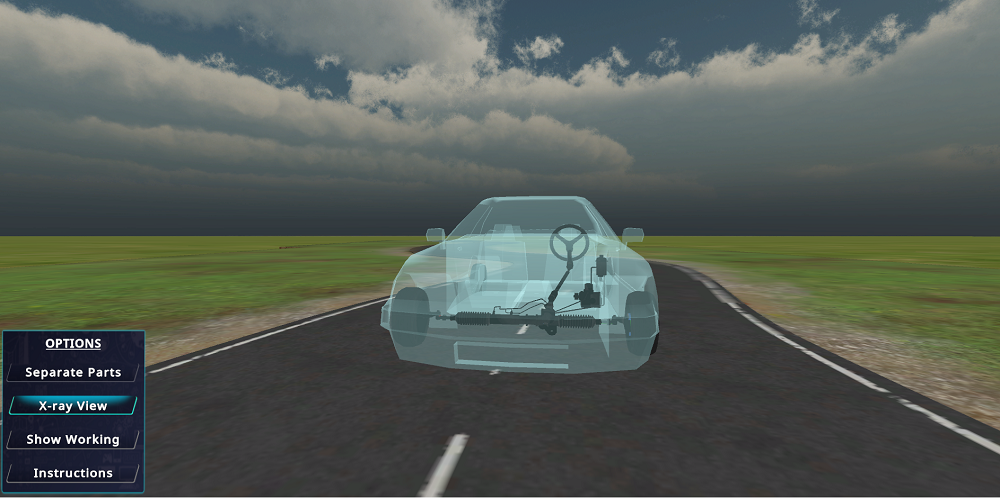
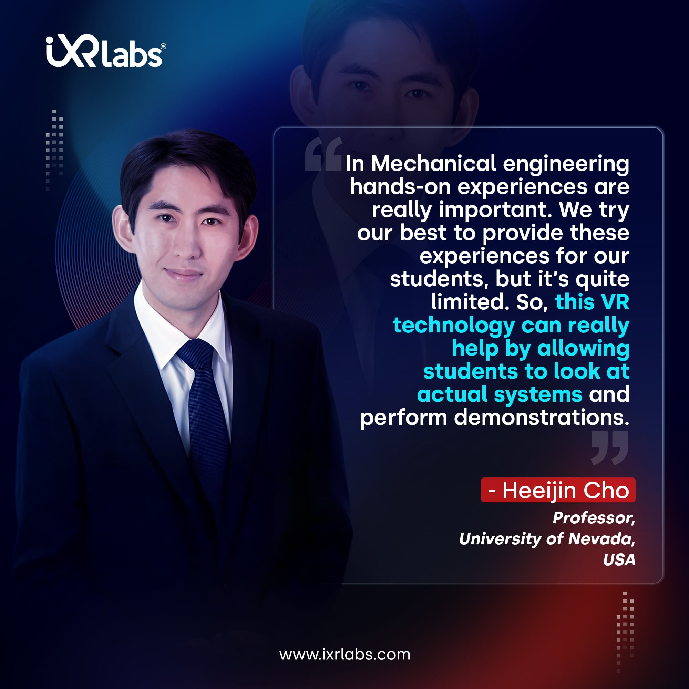
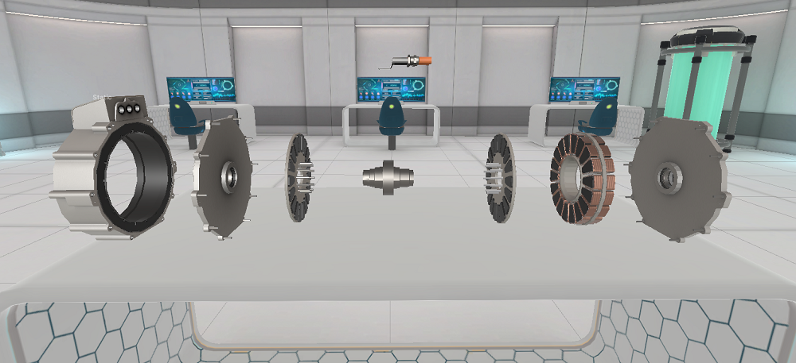
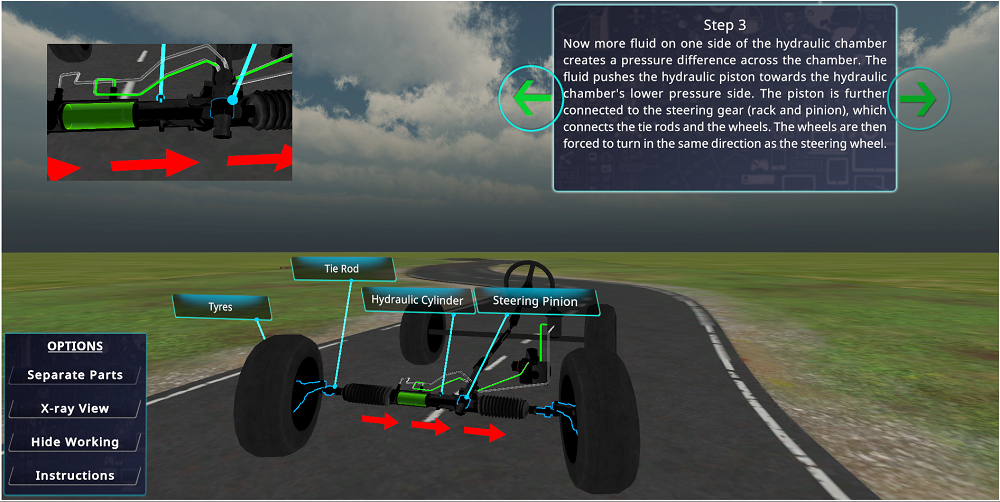

The mechanical engineering field has long been marveled at for the innovations they bring to life. From intricate machinery to advanced aircraft systems, the discipline represents the confluence of precision, creativity, and innovation. Yet, as technologies evolve, so too do the tools and methodologies at an engineer's disposal.
A game-changer in this domain?
It is virtual reality. Often associated with futuristic gaming or cinematic experiences, its potential stretches far beyond the realms of entertainment. When we shift our gaze to the world of engineering, more specifically, mechanical engineering, the impact of VR is both profound and transformative.
For decades, mechanical engineering has remained rooted in its foundational principles. Blueprints, prototypes, and real-world testing have been the bedrock of this discipline. But with the advent of VR, these traditional practices are undergoing a revolutionary shift.
Why?
It’s because VR transports engineers and students into a hyper-realistic digital dimension where they can visualize, interact with, and even dissect machinery and systems without ever touching a physical object. In this blog, we will delve into the fascinating convergence of virtual reality and mechanical engineering. So, let’s begin.
Virtual Reality in Mechanical Engineering

At its core, VR offers a simulated experience that can be similar to or entirely different from the real world.
While the entertainment industry was quick to adopt VR for immersive gaming, the potential of VR in engineering education and practice has been gaining unprecedented momentum.
Imagine a world where budding engineers can walk through the components of an aircraft engine, understand the dynamics of high-speed machinery, or even participate in a virtual industrial visit to a factory half a world away.
This is the potential of virtual reality in mechanical engineering.
With a VR headset on, a student is no longer a mere observer. They are, instead, an active participant. They can zoom into specific components, disassemble them to see their inner workings, and even run simulations to witness how changes in one part can affect the whole system. This immersive interaction goes beyond mere observation; it fosters deep understanding and intuition.
While aircraft engines serve as a vivid example, the scope of VR in mechanical engineering is far more extensive. From understanding the high-speed dynamics of turbomachinery to virtually touring an automotive manufacturing unit, the opportunities are vast and varied.
 Get the App from Meta Store: Download Now
Get the App from Meta Store: Download Now
Imagine students being able to:
● Experience the Flow: Dive into the world of fluid dynamics, watching in real-time how liquids and gases flow and react within systems.
● Virtual Assembly Lines: Walk through virtual factories, understanding the automation processes, robotic assemblies, and even the ergonomic factors that contribute to efficient production.
● Safety Simulations: Engage in virtual risk-assessment exercises where they can experience potential hazards in a controlled environment, enabling them to prepare for real-world scenarios.
● Global Learning Expeditions: Join a virtual tour of a manufacturing plant in Germany, a car assembly line in Japan, or a wind turbine farm in Denmark, all from their classroom or home.
The possibilities, as vast as the field of mechanical engineering itself, are continually expanding with the advancements in VR technology.
Applications of VR in Mechanical Engineering

VR in mechanical engineering can be considered the modern toolbox.
Asking Why? Well, here are the reasons:
☑️ VR for Product Design
Product prototyping and design are pivotal in mechanical engineering. Using VR, engineers can visualize and interact with 3D models of their designs, providing real-time insights and facilitating tweaks before physical prototypes are even produced.
The spatial understanding offered by VR can aid in predicting design flaws, ergonomics, and aesthetics that 2D renderings may not capture adequately.
☑️ Virtual Industrial Visit
Remember those field trips to factories and manufacturing units? The logistics, the permissions, the safety concerns?
With VR, these hassles evaporate. Engineering students can don VR headsets and embark on a virtual industrial visit, witnessing manufacturing processes and machinery operations from the comfort of their classrooms.
☑️ Exploring Machinery in VR
The drilling industry, paramount to several sectors, relies heavily on rotary drillers. Understanding its mechanics, operations, and maintenance can be both challenging and risky in real time. This is where exploring rotary driller in VR becomes helpful.
With the implementation of VR in mechanical engineering, students and professionals can explore complex machines in a risk-free virtual environment, gaining insights and knowledge without physical constraints.
☑️ Aircraft Maintenance Engineering
Aircraft systems are intricate, with little room for error. Training in this sphere of aircraft maintenance engineering demands hands-on experience.
But what if engineers could practice maintenance tasks, identify issues, and understand aircraft systems using VR?
Such virtual experiences could supplement real-world training, ensuring engineers are better prepared and more knowledgeable.
☑️ Collaborative Design & Review
Collaboration is the essence of innovation. Engineers across the globe can come together in a virtual space, review designs, discuss modifications, and brainstorm solutions. This not only saves time and resources but also fosters a culture of global collaboration.
VR in Other Engineering Disciplines

By providing an immersive, three-dimensional view of projects, VR engineering allows engineers to identify potential problems and fine-tune designs in ways previously unattainable. Here's how VR is transforming some of the core engineering disciplines:
Also Read: How VR HVAC Training Can Bridge the Learning Gap for Students☑️ VR in Electrical Engineering
Just as mechanical engineers can visualize machinery, electrical engineers are not left behind in harnessing the power of VR. They can now simulate and interact with complex electrical systems using VR. This immersive approach to using VR in electrical engineering offers numerous advantages:
● Safety First: Working with electrical systems can pose risks. VR offers a safe environment where engineers can test different scenarios without the actual dangers of electrical shocks or system malfunctions.
● Efficient Design: With VR, electrical engineers can visualize and adjust circuitry, placements, and connections in real time. This immediate feedback reduces the number of iterations required and speeds up the design process.
● Collaboration: Engineers from different locations can enter a shared VR space, collaborate on designs, and make changes in real time, eliminating the need for physical prototypes or constant back-and-forth communication.
"Step into the forefront of mechanical engineering innovation with iXR Labs' immersive VR experience, where theory transforms into hands-on mastery at your fingertips."
☑️ VR in Civil Engineering
Infrastructure projects like bridges, tunnels, and skyscrapers can be monumental tasks. With VR civil engineers can:
● Site Visits: Before the construction phase, engineers can 'walk' through the proposed structures, ensuring that the designs align with practical realities.
● Risk Management: Potential issues, like water flow in tunnels or wind effects on bridges, can be simulated in VR, allowing engineers to foresee and mitigate challenges.
● Client Presentations: Instead of 2D blueprints, clients can put on a VR headset and get a feel for the final project, making discussions more productive.
☑️ VR in Chemical Engineering
When it comes to chemical processes, precision is paramount. VR aids chemical engineers by:
● Simulating Reactions: Observe how different compounds interact without the need for physical trials. This not only conserves resources but also ensures safety.
● Plant Design: Engineers can virtually navigate through a chemical plant, optimizing the placement of equipment and ensuring efficient workflows.
● Training: New chemical engineers can learn processes and safety protocols in a controlled VR environment before handling real-world scenarios.
Why Mechanical Engineering Colleges Should Consider a VR Lab?

Now the big question is why engineering colleges should consider VR lab. Education is on the brink of a revolution, with VR at its forefront.
Traditional labs, while essential, have limitations. Space, equipment costs, and safety concerns are perennial issues. A VR lab, on the other hand, can simulate countless scenarios, machinery, and experiments. From exploring the depths of a combustion engine to the intricacies of a jet propulsion system, the possibilities are boundless.
But beyond the practicalities, there’s a greater advantage.
VR in engineering education fosters engagement. It piques my curiosity. When students can 'walk through' an engine or 'operate' machinery in a virtual setting, the learning experience becomes interactive, memorable, and fun.
Furthermore, with the rise of remote learning, VR labs can offer hands-on experience even when physical presence is not possible. It bridges the gap between theoretical knowledge and practical understanding, all while ensuring safety and accessibility.
The future is virtually here!
As the boundaries between the physical and virtual worlds blur, industries must adapt. The application of VR in mechanical engineering is not just a futuristic concept, instead, it's an evolving reality. From product design to education, the influence of VR is reshaping how mechanical engineering is perceived, taught, and practiced.
In conclusion, for institutions, professionals, and students, embracing this virtual wave is not just beneficial—it's essential. As we continue to push the frontiers of innovation, there's no doubt that VR will play a pivotal role in shaping the mechanical engineers of tomorrow.